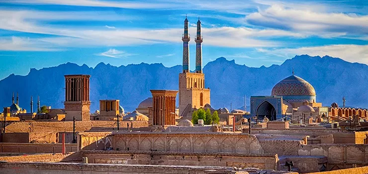

مقالات
یزد
یزد به عنوان نخستین شهر خشت خام جهان معروف است و به عنوان نخستین شهر تاریخی ایران و بیستودومین اثر
تاریخی کشور در فهرست میراث جهانی یونسکو به ثبت رسیده.
شهر یزد یکی از قطبهای پزشکی و فرهنگی ایران بهشمار میآید و نخستین صندوق امانات جهان ۱۷۰۰ سال پیش در حوضه
تمدن این شهر بنا نهاده شدهاست.
مسلماً بارزترین خصوصیت شهر یزد را میتوان وجود محلههای قدیمی و سنتی با کوچه پس کوچههای خشت و گلی در هم
تنیده، بازارها، مساجد، حمام و خانههای آن دانست.بیشتر مردم یزد مسلمان و شیعهٔ دوازدهامامی هستند همچنین گروه
بزرگی از زرتشتیان ایران در یزد ساکن هستند و همینطور تعداد زیادی از بهائیان نیز در یزد ساکن میباشند. اقلیت
کوچکی از یهودیان نیز ساکن این شهر میباشند.
در داخل و اطراف شهر یزد، زیارتگاههای مختلفی برای زرتشتیان به چشم میخورد که در هر ماه یا فصل، مراسمهای
ویژهٔ پیروان این دین در آنها برگزار میشود. از آن جمله میتوان به جشن سده اشاره کرد که یکی از مراسم معروف و
عمومی زرتشتیان است و هرساله در روز دهم بهمنماه، همزمان با مناطق دیگر ایران، در یزد برگزار میشود.
باقلوا

باقْلَوا گونهای شیرینی است که در کشورهای ایران، ترکیه، جمهوری آذربایجان و کشورهای آسیای میانه و قفقاز، برخی
کشورهای عربی، یونان، قبرس و برخی مناطق روسیه تهیه میشود. باقلوا شیرینی سنتی ترکان آسیای میانه ترکمنهای
قدیم نیز هست.
باقلوا در ایران به شکلهای مختلف همچون لوزی، مربعی و لولهای و در انواع طعمهای پسته ای، گردویی ،بادامی،
نارگیلی و کاراملی با مواد اولیه نظیر: گلاب، شکر، هل، آرد، بکینگ پودر، زرده تخم مرغ، خاک قند، شیر، روغن تهیه
میشود.در ایران این شیرینی در شهرهای قزوین، کاشان، یزد و تبریز تهیه میشود.قدیمیترین نوع شیرینی در یزد
محسوب میشود. گلاب، شکر، هل، آرد، بیکینگ پودر، زردهٔ تخممرغ، خاک قند، شیر و روغن، مواد اولیه این شیرینی را
تشکیل میدهند.
عسل طبیعی
مایعی شیرین و گرانرو است که توسط زنبورعسل و برخی حشرات دیگر نیز تولید میشود.زنبورها، عسل را از تراوش شکری
گیاهان و گلها (شهد گلها) یا تراوشهای برخی دیگر (مانند عسلک) از راه بالاآوری، فعالیت آنزیمی و بخار آب
فرآوری میکنند. زنبورها عسل را در ساختارهایی از جنس موم به نام کندو اندوخته میکنند.
عسل یک درمان عامیانه و خانگی برای سوختگی و سایر آسیبهای پوستی است. شواهد اولیه نشان میدهد که عسل به بهبود
سوختگیهای جزئی ۴ تا ۵ روز سریعتر از سایر پانسمانها کمک میکند، و شواهدی نشان میدهد که عفونتهای پس از
عمل که با عسل درمان میشوند، سریعتر و با عوارض جانبی کمتری نسبت به ضدعفونیکننده و گاز پانسمان بهبود
مییابند.شواهدی مبنی بر استفاده از عسل در سایر درمانهای زخم از کیفیت پایینی برخوردار است و نمیتوان
نتیجهگیری محکم و مطمئنی در این رابطه گرفت.چندین محصول عسل برای استفاده درمانی توسط سازمان غذا و داروی
آمریکا برای درمان زخمها و سوختگیهای جزئی تأیید شدهاند.
عسل از دیرباز به عنوان یک آنتیبیوتیک موضعی توسط پزشکان طب سنتی و گیاهی مورد استفاده قرار
میگرفتهاست.مطالعات متعدد نشان دادهاست که عسل دارای فعالیت ضد باکتریایی گستردهای در برابر باکتریهای گرم
مثبت و گرم منفی است اما این ویژگی، میان انواع عسلهای مختلف بهطور گستردهای متفاوت است.بیشتر کالری موجود در
عسل از فروکتوز است، عسل باعث افزایش وزن نمیشود.
نبات هل
برای تهیه آن ابتدا شکر را در آب جوش حل میکنند تا محلول فوقاشباع درست شود. سپس نخی در آب آویزان کرده و
میگذراند تا خنک شود و بلور تشکیل شود. نبات، نسل قدیم آبنباتهای امروزی است. یکی از پرمصرفترین انواع نبات،
نبات چوبی و نبات شاخه است. اغلب از شاخه نبات برای تزیین سفرههای عقد و هفت سین و از نبات چوب دار برای شیرین
کردن چای و نوشیدنیهای گیاهی استفاده میشود.
ماده اولیه در شکر، قند و نبات یکسان است ولی کریستالهایی که در نبات ایجاد میشود از نظر وضعیت فیزیکی و نوع
کریستالهایشان با قند و شکر متفاوت است ولی پس از حل شدن در آب هیچ تفاوتی بین آن ها وجود ندارد. تنها تفاوت
ممکن افزودنی هایی نظیر زعفران یا سایر طعم دهنده ها است. تصور غلط رایج در مورد تفاوت های بین قند شکر و نبات
عمدتا جنبه تبلیغی و خرافی دارد. مثلا در برخی متون اشاره شده است که تفاوت نبات با قند و شکر مثل تفاوت یخ با
آب و بخار آن است. واضح است در شرایط یکسان اینها با هم یکی هستند. مثلا یخ در بیست درجه سانتیگراد به آب تبدیل
میشود و همان آب است.
ترمه
ترمه، نوعی پارچه گرانبهای بافتهشده از الیاف بسیار لطیف است که از صنایع دستی نساجی نفیس ایران
میباشد.نقشهای منحنی مانند بته جقه و گلهای شاهعباسی در رنگهای مختلف در ترمه به کار میرود.ترمه با
طرحهای بسیار متنوعی در نقاط مختلف ایران بافته میشود و ترمه یزد به زیبایی بسیار معروف است.
برای ترمهبافی از ابریشم و پشم مرغوب با الیاف بلند استفاده میکنند. نخها با رنگهای گیاهی و مواد مصنوعی
طبیعی، و بیشتر به رنگهای عنابی، قرمز، سبز، نارنجی و مشکی رنگرزی میشوند.اصولاً پارچهٔ ترمه به سبب بافت
منحصر به فرد، و به دلیل تراکم زیاد پودهایش از یک مقاومت نسبی مطلوب برخوردار است و در مجموع پردوام تر از
بقیهٔ انواع پارچه است. با این وجود، نور و رطوبت از بزرگترین عوامل رنگ پریدگی ترمه است؛ زیرا قسمتهای سیاه آن
در برابر نور و حرارت حساس تر از بقیهٔ قسمتها بوده و به راحتی آنها را جذب میکند. هم چنین بید یکی از دشمنان
ترمه است و به همان گونه که پارچههای پشمی در برابر بیدزدگی محافظت میشود، میبایست در نگهداشت ترمه اقدام
شود، که متداولترین آنها استفاده از نفتالین میباشد. از آن جا که معمولاً ترمه با آستری و یراق همراه میشود،
شستن ترمه با آب به محصول آسیب میرساند و از طرفی دمای بالای آب و مواد شیمیایی موجود در مواد شوینده نیز
میتواند آسیب زا باشد؛ بنابراین تنها راهی که برای شستشوی ترمه پیشنهاد شده خشکشویی است.
شروع ترمه بافی در ایران به اوایل دوره صفویه میرسد، در این میان عده ای عقیده دارند که زادگاه اولیه ترمه قلب
آسیای مرکزی و ارتفاعات کشمیر است. عده ای نیز بر این معتقدند که بافت ترمه از ایران آغاز شده و سپس به کشمیر
راه یافتهاست. آنچه به جرات میتوان در خصوص این پارچه بسیار ظریف گفت آن است که ذوق و سلیقه و ابتکار ایرانیان
در ظرافت بافت، جنس و طرحهای خیالانگیز آن در جهان کمنظیر میباشد. این هنر در دوره شاه عباس صفوی به اوج
شکوفایی و تکامل خود دست یافت، که شهره جهان گشت و به یکی از محصولات صادراتی ایران مبدل شد.
منبع: ویکی پدیا